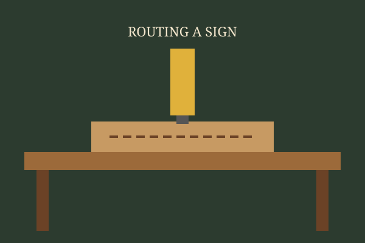

1. Picking the board
Every sign starts with the board. We look for straight grain, few knots near the lettering and boards that have dried flat. The old-growth redwood gets saved for the signs that need to last the longest.
Short notes from the bench on how the signs get made.

Every sign starts with the board. We look for straight grain, few knots near the lettering and boards that have dried flat. The old-growth redwood gets saved for the signs that need to last the longest.
Letters are laid out full size, then routed with a V-bit so the edges stay crisp. Slow passes, a sharp bit and good dust collection make all the difference.
Adirondack winters are hard on wood. We seal the end grain, paint the letters, sand back the face and finish with several coats of exterior clear coat.